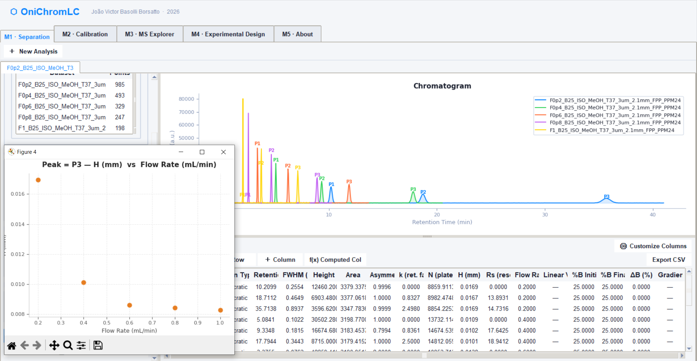
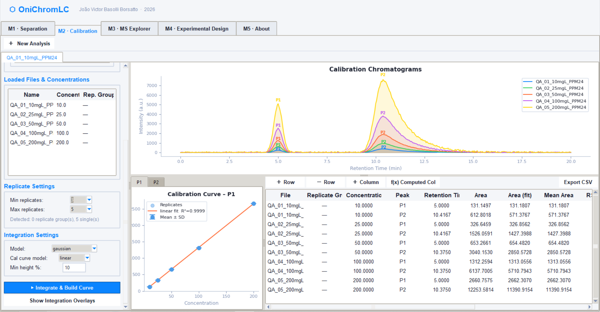
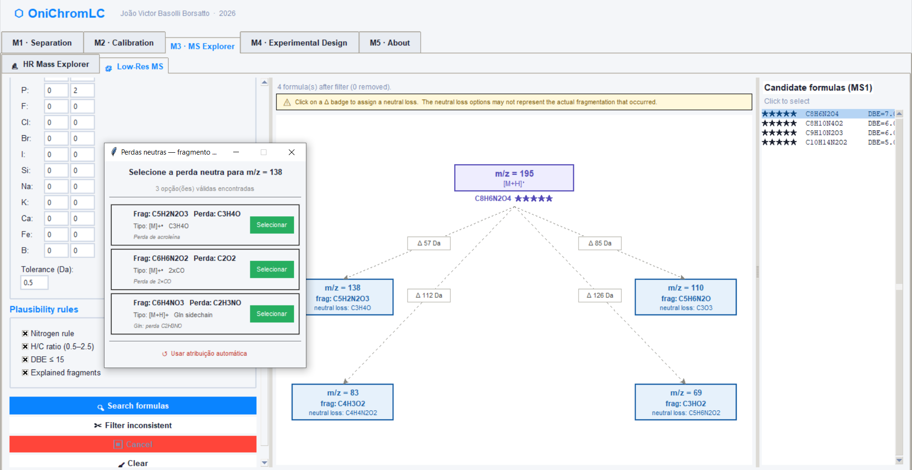
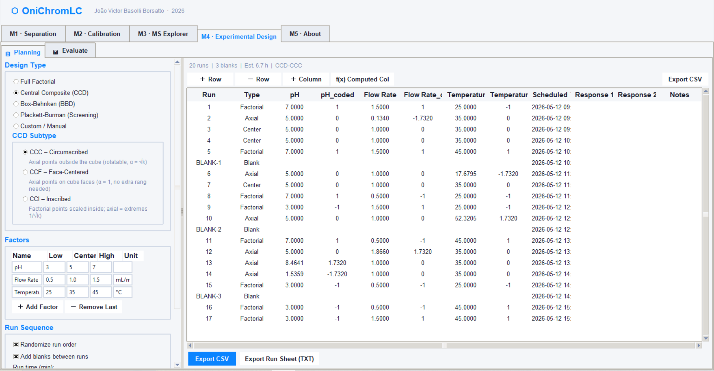

OniChromLC is a practical, open-source companion for liquid chromatography — designed to give you a quick, reliable read on your experimental results while you work. It is not a replacement for formal data treatment software; it is the tool you reach for first.

Each module covers a key stage of your LC workflow — giving you a fast, visual sanity check without replacing your formal data processing pipeline.
The Separation module provides a rapid visual and numerical evaluation of chromatographic performance immediately after a run is completed. Multiple chromatograms can be overlaid for direct comparison between conditions such as flow rate, mobile phase composition, temperature, gradient profile, or stationary phase.
The module automatically computes major chromatographic parameters, including retention factor (k), selectivity (α), resolution (Rs), theoretical plate number (N), plate height (H), asymmetry/tailing, peak width, and peak capacity. Integrated Van Deemter analysis tools allow rapid evaluation of efficiency as a function of linear velocity, helping users identify optimal operating conditions during method optimization.
Chromatograms may be imported from CSV files, pasted manually, or even extracted directly from chromatogram screenshots through image-based digitization. Gaussian and exponentially modified Gaussian (EMG) overlays assist in peak inspection and visual validation of peak shape.
Quick peak checkThe Calibration module was designed for rapid evaluation of analytical linearity and signal quality during quantitative LC experiments. Standard series can be loaded and inspected in real time, allowing immediate verification of calibration consistency before formal data processing.
The module supports linear regression analysis with automatic R² calculation, residual visualization, and outlier inspection. Integrated Gaussian and EMG peak fitting tools help evaluate peak integration quality, especially for partially asymmetric peaks.
Additional analytical metrics include signal-to-noise ratio (S/N), estimated limits of detection and quantification (LOD/LOQ), concentration-response comparison, and exportable calibration tables. The workflow is intended for quick analytical validation at the bench, while preserving compatibility with formal validated software pipelines.
Linearity checkThe MS Explorer module assists in rapid interpretation of mass spectrometry data during LC-MS experiments. Users can search candidate molecular formulas from high-resolution or low-resolution m/z values while evaluating isotopic plausibility and fragmentation behavior.
The software includes an extensive adduct library with more than 30 ionization possibilities, including protonated, sodiated, potassiated, ammonium, formate, acetate, and complex calcium-formate adducts commonly observed in electrospray ionization.
Candidate formulas are filtered and ranked using chemical plausibility criteria such as double-bond equivalence (DBE), elemental restrictions, nitrogen rule evaluation, and H/C ratio inspection. Interactive fragmentation trees and neutral loss visualization tools help users formulate structural hypotheses directly during experimental work.
Formula assignmentThe Planning module streamlines the creation and organization of chromatographic optimization experiments. Multiple Design of Experiments (DoE) strategies are supported, including Full Factorial, Central Composite Design (CCD), Box-Behnken Design (BBD), and Plackett-Burman screening designs.
Experimental factors such as flow rate, solvent composition, temperature, gradient time, or pH can be configured with automatic randomization of run order to minimize systematic bias. The module can also insert blank runs, equilibration steps, and scheduled timestamps for long unattended sequences.
Finalized sequences can be exported as CSV tables or printable run sheets for direct use during laboratory operation. The module focuses on practical planning and execution logistics, while statistical modelling and response surface interpretation remain compatible with external statistical software.
Run planningThe About module centralizes software documentation, theoretical equations, methodological references, version history, and citation information associated with OniChromLC.
Important chromatographic equations used throughout the software are documented directly inside the application, including plate theory, Van Deemter relationships, chromatographic resolution equations, calibration expressions, and signal-processing formulas.
The module also contains author information, publication references, software acknowledgements, and version tracking to support reproducibility and proper citation in scientific publications.
Documentation


OniChromLC is designed for the moments between runs — fast feedback, visual checks, and practical decisions. Formal data treatment stays in your statistical software.
Load a run and get a readable result in seconds. No setup, no scripts — designed for the moment you pull a vial from the autosampler.
Overlaid chromatograms, calibration plots, and fragmentation trees let you see what is happening, not just read a table of numbers.
Runs entirely on your computer. No internet connection, no cloud, no data leaving the lab — suitable for regulated environments.
OniChromLC flags issues and builds intuition. Final quantification and reporting are done in your validated analysis pipeline, as they should be.
From checking a separation to drafting a DOE run list — all common bench-side decisions are covered in one lightweight application.
Fully transparent code. Inspect, adapt, or extend OniChromLC freely. No licence fees, no locked features.
Available for Windows, macOS, and Linux. Free and open-source.